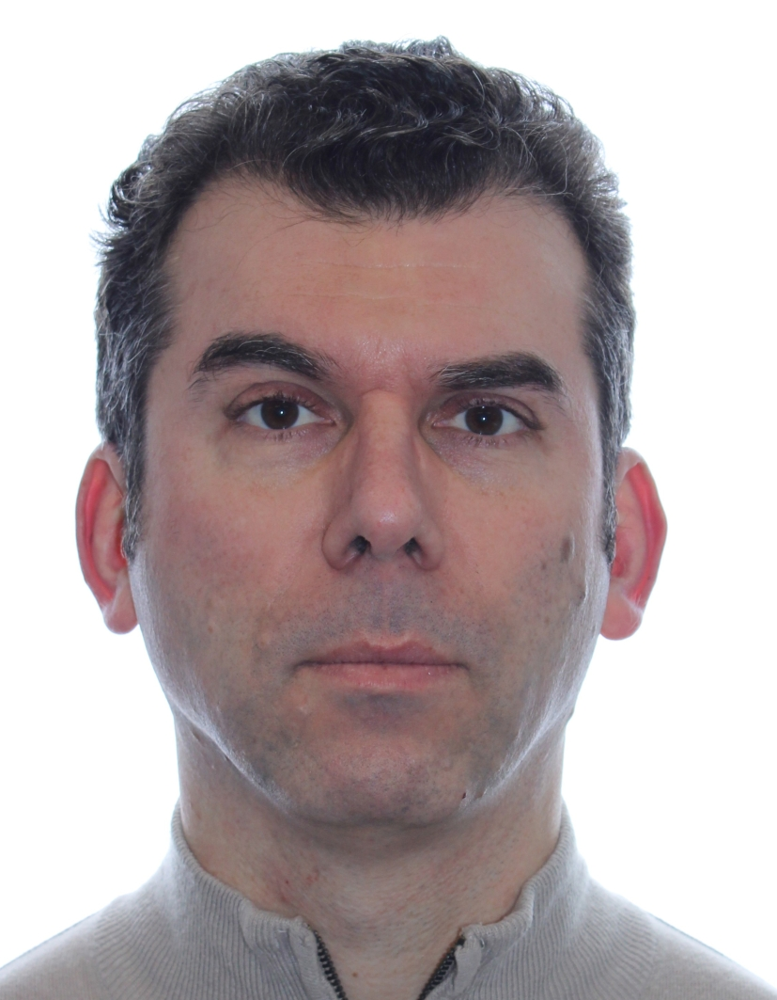

Summary
Highly experienced and detail-oriented Casting Technician with
over 10 years in the industry, specializing in the selection and implementation of innovative casting processes for various materials.
Proficient in operating advanced casting machinery and employing a variety of techniques to ensure precision and high-quality output.
Demonstrated expertise in material properties, preparation, and testing to optimize performance and durability of casted products.
Education
University of Gdansk, 2002
Investment and Estate Organization
Uniwersytet WSB Merito Gdansk, 2003
Bachelor Degree: Banking Systems
Work Experience:
Jewellery casting Technician - Krypton Jewellery
Duties:
- maintaining Casting Equipment
- producing casting molds
- casting precious metals products
Jewellery molds cutter - JewelCast
Duties
- Designing Jewellery molds
- Assising in casting room
- Spruing casting trees
Jewellery molds cutter/ CAD Designer - Niagara Falls Casting
Duties:
- 3D Desgning Jewellery components
- designign naturall rubbe molds
- 3D rapid prototyping with Solidscape
Night Manager - St. John's Hotel 2010-2015
Duties:
- Organization of the Night Shift Department and the Reception
- Providing Health and safety training for 10 member of staff
- Interviewing and revision of the employees performance
- Looking after all aspect of the hotel operations during the night
- Designing and maintaining departmental Standards of Practice.
- Auditing internal IT systems
Night Manager - Welcombe Menzies Hotel 2008-2010
Duties:
- Organization of the Night Shift Department and the Reception;
- Running night audit, maintaining the whole system during the night and
rectifying any issues
Night Manager - Express by Holiday Inn - 2005-2008
Duties:
- Organization of the Night Shift Department and the Reception;
- Auditing internal IT systems
- Looking after all aspect of the hotel operations during the night;
Skills:
- 3D modeling with Rhinoceros software
- Post processing with Materialise Magics
- 3D rapid prototyping on SolidScape printers
- Experienced in natural rubber mold and cold cure silicon forms
production in jewelry industry
- Very good customer service and telephone skills
- Full Driving License
Contact Me
My Hobbies